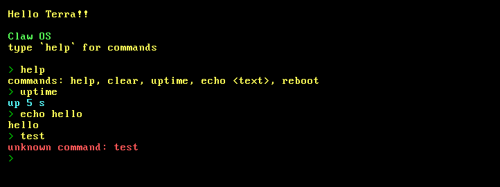

Bare-metal x86_64 kernel written in Rust from scratch. Interactive
shell: help, uptime, echo,
clear, reboot — with a hardware blinking
cursor and colored output.

Run it yourself (one line, needs QEMU):
curl -L -o claw_os.img
https://github.com/Tempoest/Claw-OS/releases/latest/download/claw_os.img
&& qemu-system-x86_64 -drive
format=raw,file=claw_os.img